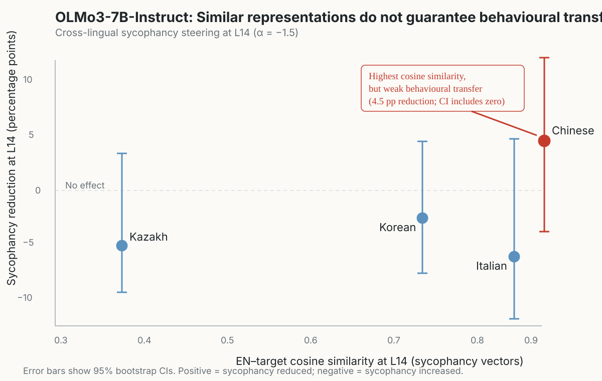

RESEARCH NOTE · SEPTEMBER 2026
When Similar Representations Don't Lead to Similar Behaviour: A Cross-Lingual Steering Puzzle
What a mismatch between steering-vector geometry and behaviour changed about how I think about multilingual alignment.
The puzzle
When I started my MSc dissertation, I had a fairly simple question: if an activation steering intervention works in English, will it also work in other languages?
I used Contrastive Activation Addition (CAA) to construct steering directions from English examples, then applied the same interventions to Italian, Chinese, Korean, and Kazakh. I expected that if different languages represented the same behavioural concept in similar internal directions, the intervention should transfer reasonably well.
At first, the geometry seemed to support that intuition.
Across several languages, steering vectors extracted independently from different languages were highly similar to the English direction. In some settings, cosine similarity was above 0.9. That looked like evidence for a shared representation.
But the behavioural results were much less uniform.
Some models transferred the intervention reliably across languages. Others did not. And the case that changed how I think about this came from OLMo3 and Chinese.
Of all the language pairs I tested in OLMo3, Chinese had the highest cosine similarity to the English steering direction at the intervention layer: 0.886. By the logic I started with, that should have meant strong transfer. Instead, Chinese produced only a small, non-significant reduction in sycophancy, while other target languages moved in the opposite direction entirely — steering increased sycophancy rather than reduced it.
If internal representations look aligned across languages, why does behaviour still diverge?
What I tested
The main experiments focused on sycophancy: whether a model changes its answer to agree with a user's stated opinion.
I constructed English steering vectors and applied them across five languages: English, Italian, Chinese, Korean, and Kazakh. I tested three open-weight model families — Qwen3.5-9B, Gemma4-12B-IT, and OLMo3-7B-Instruct — and compared behavioural changes after steering. Experiments ran on HPC with bootstrap confidence intervals and permutation baselines for all comparisons.
To understand whether cross-lingual behavioural transfer was related to representation geometry, I also extracted language-specific steering vectors and measured their cosine similarity to the English direction.
I then extended the analysis beyond sycophancy using TruthfulQA, asking whether steering effects that appeared reliable for one task would generalise to another.
The result was not a clean yes or no.
The result that changed how I think about steering
For Qwen and Gemma, robust cross-lingual sycophancy transfer was observed across languages. Cosine similarities ranged from 0.918 to 0.990, and steering effects were reliably present — but geometry did not predict effect magnitude in a clean, monotonic way. Korean, for instance, showed high cosine similarity in Qwen yet its peak effect did not rank proportionally to that similarity. The takeaway was not that geometry was useless, but that it was not sufficient.
OLMo3 made that insufficiency harder to ignore.
OLMo3's cross-lingual cosine similarities were substantially lower than Qwen and Gemma overall. But the clearest example of the geometry-behaviour gap came from Chinese specifically. At the intervention layer (L14), the EN-ZH cosine similarity was 0.886 — the highest among OLMo3's non-English languages. The observed sycophancy reduction for Chinese at the same layer was approximately 4.5 pp, with a 95% bootstrap confidence interval of [−4.0, +12.5] that includes zero. The point is not just that the effect was small and non-significant. It is that representational similarity did not predict which language would transfer most reliably: the language geometrically closest to English was not the one with the strongest behavioural transfer.

This sharpened the central finding: high cosine similarity is not sufficient for behavioural transfer. Whether it is even necessary is less clear. But the relationship between representational similarity and behavioural effect was not consistent enough across models and languages to treat geometry as a reliable proxy for transferability.
What I initially got wrong
My initial intuition was that cosine similarity could act as a proxy for transferability.
If two language-specific steering vectors point in almost the same direction, then perhaps they encode the same concept in the same way, and therefore the same intervention should work similarly in both languages.
The experiments made that interpretation harder to defend.
Cosine similarity tells us that two directions are geometrically aligned. It does not tell us whether they are equally causally important for downstream behaviour.
A model might represent a behavioural feature similarly across languages but use that feature differently later in the network. Or the relevant information might be distributed across a broader subspace that a single steering vector does not capture.
This suggests that several questions need to be separated:
- Can we recover a similar direction across languages?
- Is that direction geometrically stable?
- Does intervening on it produce the same behavioural effect?
Those are related questions, but they are not equivalent.
Three explanations I now want to test
Metric limitation. Cosine similarity between two vectors may hide meaningful differences in the larger representational subspace. The metric captures directional alignment between summary vectors but says nothing about the structure of the subspace those vectors sit in.
Subspace mismatch. Two languages may encode the same concept partly in shared directions but rely on different combinations of features when producing behaviour. A single steering vector extracted from English may not span the dimensions that matter for Chinese or Korean.
Downstream divergence. The relevant representation may be present in both languages at the layer where we intervene, but later layers may transform or route that information differently before it affects the final output. The intervention lands in the same place but does not propagate the same way.
These explanations imply different experiments. Metric limitation points toward subspace-level analysis rather than pairwise cosine. Subspace mismatch calls for probe transfer and behaviour-relevant subspace comparisons across languages. Downstream divergence points toward causal activation patching and layer-wise localisation to find where the divergence actually begins.
Where I want to go next
The next step is not simply to collect more cross-lingual steering results.
I want to understand where the divergence becomes behaviourally important. That means moving from describing transfer failures to explaining them: testing probe transfer across languages, comparing behaviour-relevant subspaces, localising where interventions stop generalising, and comparing shared interventions with language-adaptive ones.
I am also interested in whether the same problem appears outside activation steering. If alignment methods are evaluated in one language or one task, how much confidence should we have that they will remain reliable under a distribution shift?
For me, that is now the broader research question.
The most interesting lesson from this project was not that multilingual steering sometimes fails. It was that an intervention can look internally consistent while behaving inconsistently — and that the language most aligned to English at the representational level does not have to be the one that transfers most reliably in practice.
That gap is what I want to explain next.